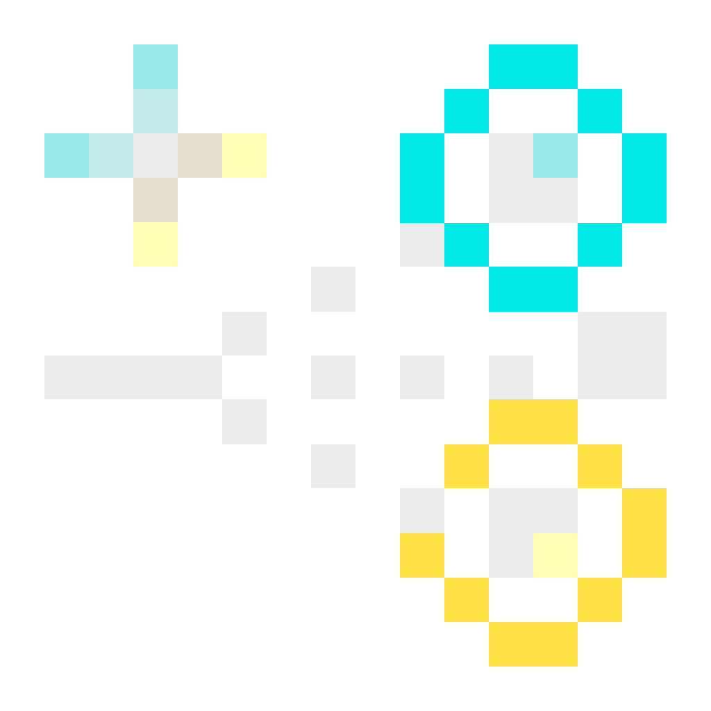

MOCK · NOT A CAPTURED DISCORD CARD

21:36 elapsed · simulated session
Production formatter payload, synthetic inputs.
Discord layout and visible card remain unverified.

21:36 elapsed · simulated session
Production formatter payload, synthetic inputs.
Discord layout and visible card remain unverified.
Six samples come from the compiled production formatter. Counts, session clock and game state are simulated. Ordinary area names are off by default; choose the explicit opt-in example to preview Mines. Holy Mountain is the requested coarse context.
The local preview uses the supplied Staging artwork. The emitted Discord asset key is coopplus_logo_staging.